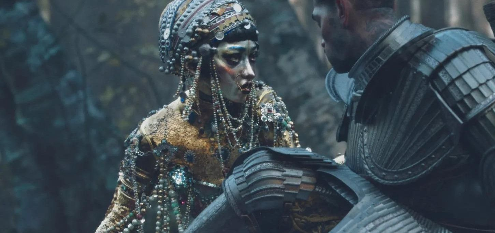

|
Homem aranha no Aranhaverso abriu as portas para um estilo de animação que gera uma dúvida: Você sabe dizer se é 3D ou 2D? Na verdade, é uma mescla dos dois. Filmes como Gato de Botas 2, e até mesmo séries como Arcane e o epsódio Jibaro, da série Love, Death & Robots da Netflix utilizam da técnica. |
| |
|
| Divulgação/ Cinemas | Divulgação/ Netflix |
Como obteram um visual 2D? |
|
Como mencionei anteriormente, Homem Aranha no Aranhaverso é um filme animado 3D, não 2D. Com isto quero dizer que a maioria do que se vê no ecrã foi criada com modelos 3D num software 3D, e não desenhando os quadros num estilo tradicional de animação 2D. Eles usaram modelos 3D e rigs para os personagens e fundos do filme. No entanto, houve algumas inovações que usaram para fazer com que parecesse diferente, na sua maioria através da adição de elementos 2D aos activos 3D. Acrescentaram trabalho de linha ao rosto da personagem usando geometria 3D, para dar ao artista mais liberdade na criação de poses expressivas. Também pausaram ocasionalmente o filme e sobrepuseram a filmagem com uma ilustração 2D desse mesmo quadro, como lembrança de que estamos basicamente dentro de uma banda desenhada. Levaram isso mais longe, acrescentando tipografia a algumas cenas, como toques de telemóvel, gritos de carro e alguma narração. A equipa também pintou sobre a maioria das molduras e utilizou frequentemente fundos abstractos que se assemelhavam a gráficos em movimento comerciais. O mesmo processo também ocorre em Gato de Botas 2 e Arcane. |
|
| Imagem genérica/ Pinterest |
|
Aqui está um vídeo da Stream wars descrevendo esse processo: |
|
|
|
|  | Em entrevista Albert Mielgo acentua que toda a dança foi realizada através de “keyframe animation” ou seja, não há uso de CGI, e para isso, convidaram para a produção a coreógrafa Sara Silkins, para construir referências de movimentos que expressassem as motivações dos personagens através de seus gestos e movimentos, e assim como dançam nessa situação. Para isso, foram chamados os dançarinos: Megan Goldstein, Raymond Ejiofor, Judson Emery e Girvan Bramble (Jibaro), que em duas semanas foram coreografados, e gravados as cenas como referência de movimentação, a equipe do curta contou com 72 pessoas para animação. e para o Design de personagens, a animação ultiliza das mesmas técnicas antes já mencionadas pelas animações citadas acima. |